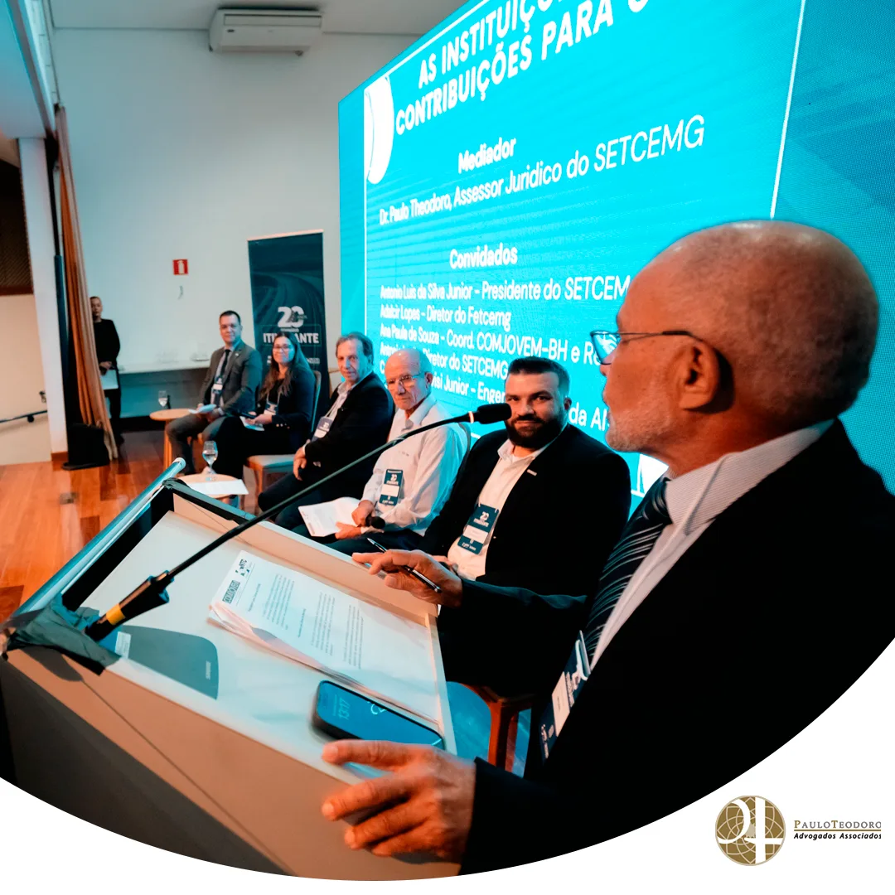
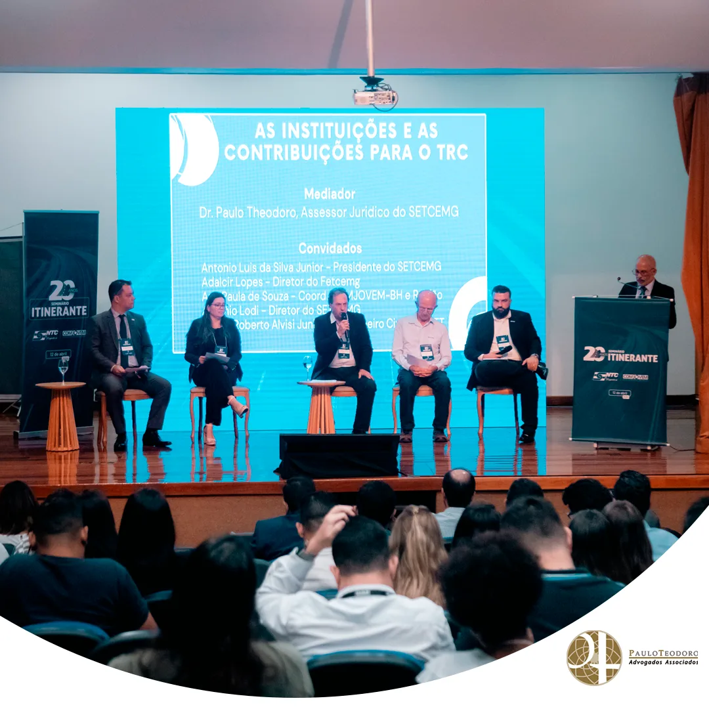
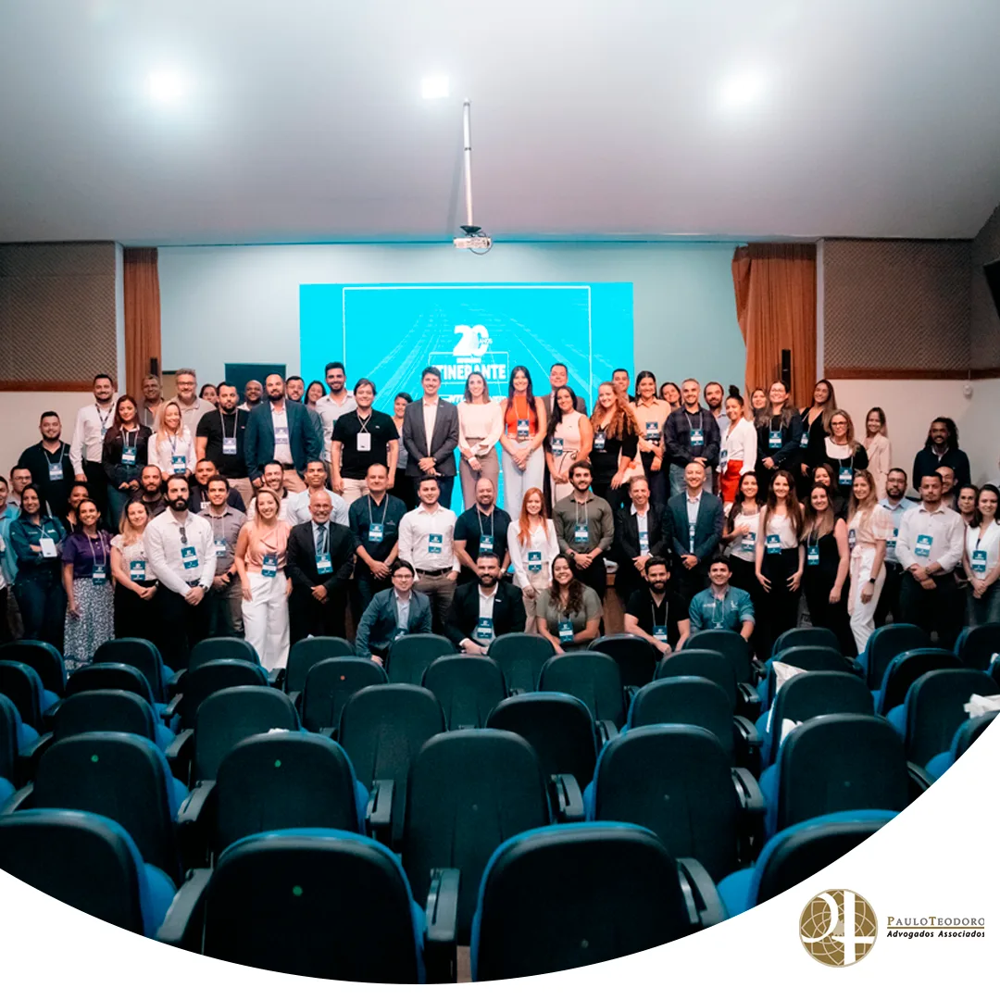

Dr. Paulo Teodoro debate sobre o futuro do transporte rodoviário de cargas em seminário nacional
No dia 12 de abril, o nosso Sócio Diretor, Dr. Paulo Teodoro, teve a honra de participar do Seminário Itinerante Nacional, a convite do SETCEMG, no qual desempenhou um papel fundamental como mediador da mesa de debate. O tema abordado foi o “Futuro do Transporte Rodoviário de Cargas: Desafios e Oportunidades”.
Organizado pela Associação Nacional do Transporte de Cargas (NTC), em colaboração com a Comjovem BH e Região, o evento reuniu uma audiência diversificada, composta por representantes de todo o Brasil. Esse encontro foi uma oportunidade valiosa para reunir especialistas e profissionais do setor, a fim de analisar os objetivos e expectativas relacionados ao transporte rodoviário.

A importância desse evento vai além do simples compartilhamento de conhecimento; trata-se de uma iniciativa crucial para promover o diálogo e a colaboração entre os diversos atores do setor de transporte rodoviário de cargas.
Ao reunir líderes de opinião e profissionais engajados, o Seminário Itinerante Nacional ofereceu uma plataforma única para explorar soluções inovadoras e estratégias que impulsionam o progresso e a sustentabilidade do transporte de cargas no país.
Em suma, a participação do Dr. Paulo Teodoro nesse importante evento demonstra seu compromisso contínuo com a excelência e sua dedicação em contribuir para o avanço do setor de transporte rodoviário de cargas.



Paulo Teodoro – Advogados Associados
- Eventos
- Artigos
- Saiba mais sobre o escritório ▸